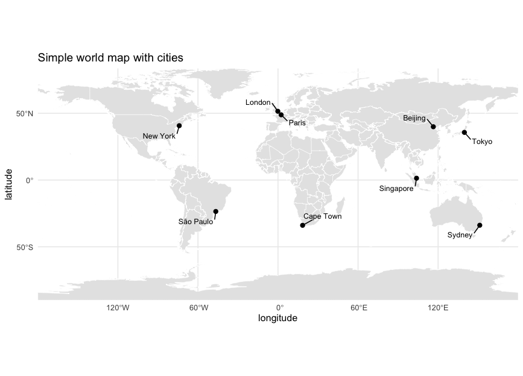
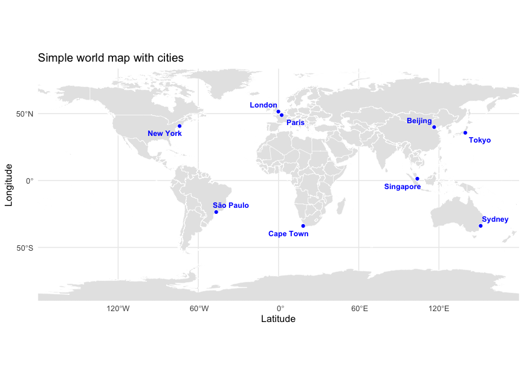
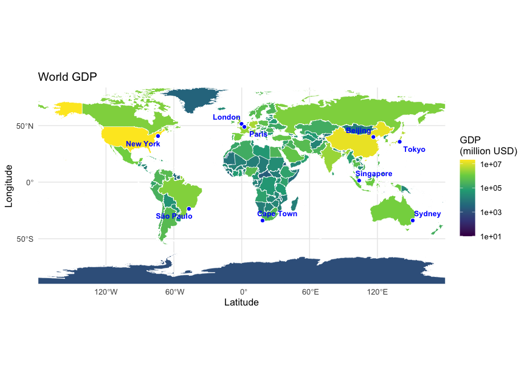
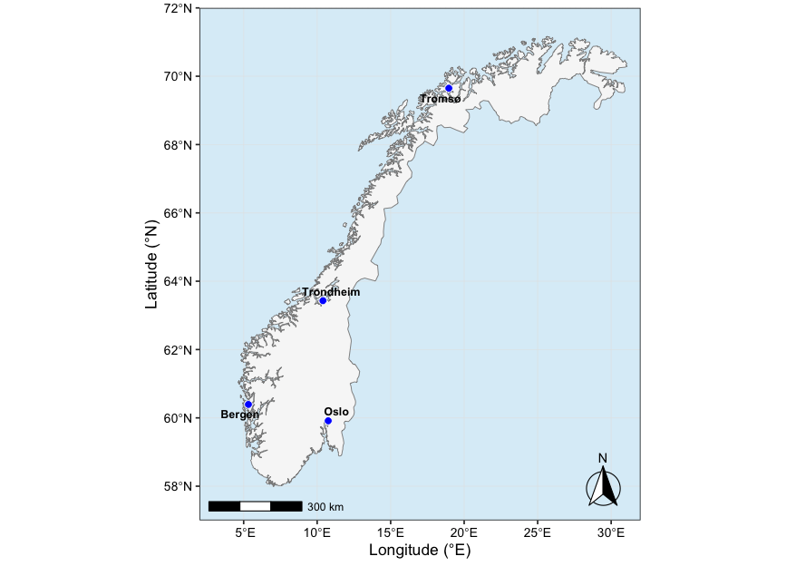
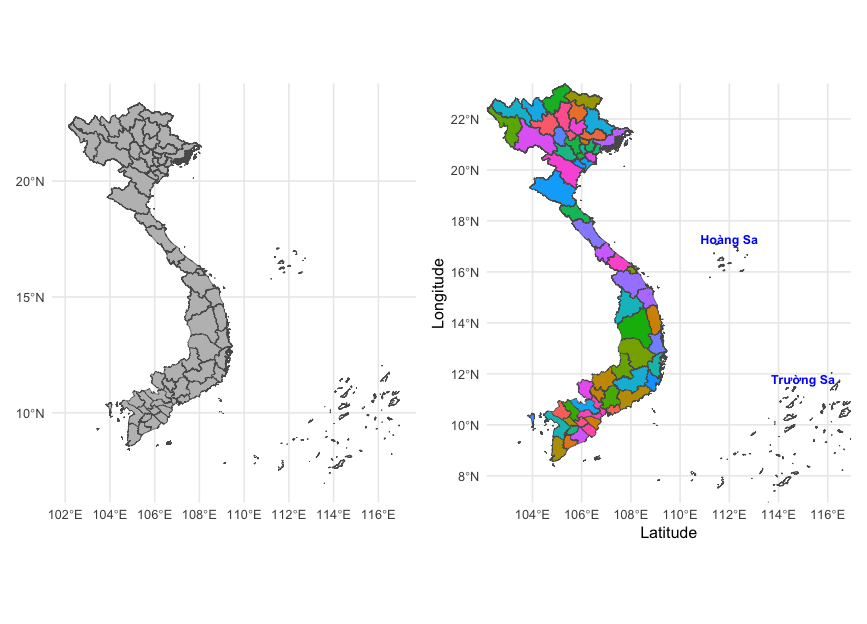
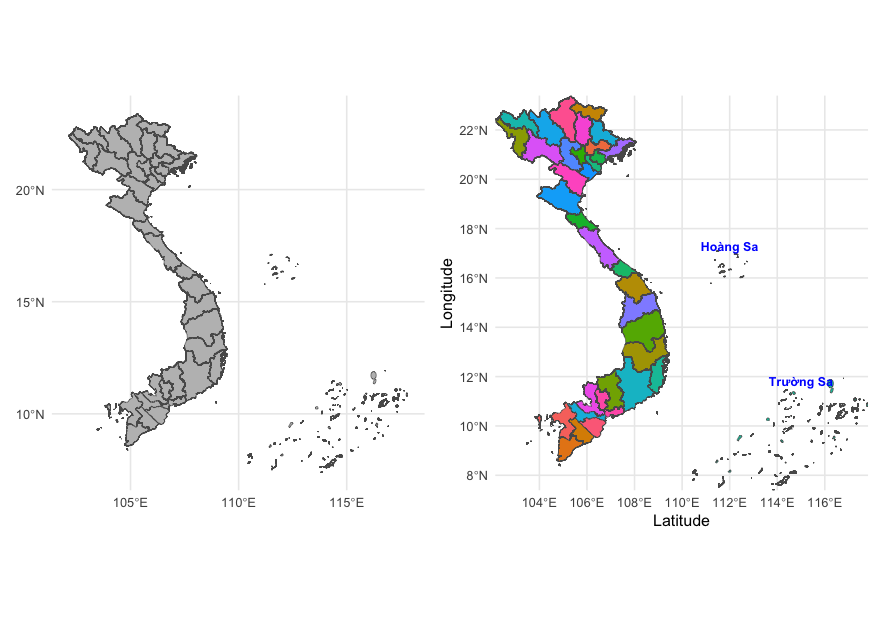

Date: August 23, 2026
This note provides R code for creating geographic maps of the world and Vietnam. The examples demonstrate how to visualize spatial data and customize maps for research and presentation purposes.
A simple and flexible approach is to use sf + rnaturalearth + ggplot2, then add cities with geom_point() and geom_text_repel()
# Install and load packages
install.packages(
c("sf", "ggplot2", "rnaturalearth", "rnaturalearthdata", "ggrepel"))
library(sf)
library(ggplot2)
library(rnaturalearth)
library(rnaturalearthdata)
library(ggrepel)
# Load the world map data
world <- ne_countries( scale = "medium", returnclass = "sf")
# Define important cities (location or sampling sites)
cities <- data.frame(
city = c("New York", "London", "Paris", "Tokyo", "Beijing", "Singapore", "Sydney", "Cape Town", "São Paulo"),
longitude = c( -74.006, -0.128, 2.352, 139.6917, 116.4074, 103.8198, 151.2093, 18.4241, -46.6333),
latitude = c( 40.7128, 51.5074, 48.8566, 35.6762, 39.9042, 1.3521, -33.8688, -33.9249, -23.5505))
# Plot the world map and cities
map <- ggplot() +
geom_sf(data = world, fill = "grey90", color = "white", linewidth = 0.2 ) +
geom_point(data = cities, aes(x = longitude, y = latitude), size = 2) +
geom_text_repel(data = cities, aes(x = longitude, y = latitude, label = city),
size = 3, min.segment.length = 0, box.padding = 0.5) +
coord_sf(expand = FALSE) +
theme_minimal() +
labs(title = "Simple world map with cities")
map

For cleaner version, it could be use a minimal theme and and modify map elements
map <- ggplot() +
geom_sf(data = world, fill = "grey90", color = "white", linewidth = 0.2 ) +
geom_point(data = cities, aes(x = longitude, y = latitude),
size = 2, fill = "blue", color = "white", shape = 21) +
geom_text_repel(data = cities, aes(x = longitude, y = latitude, label = city),
size = 3,
color = "blue",
fontface = "bold",
box.padding = 0.3,
point.padding = 0,
segment.color = NA,
min.segment.length = 0,
segment.size = 0) +
coord_sf(expand = FALSE) +
theme_minimal() +
labs(title = "Simple world map with cities",
x = "Latitude",
y = "Longitude")
map

The world map can be colored according to each country's GDP using the GDP variable provided by rnaturalearth::ne_countries(). Because GDP values vary considerably across countries, applying a logarithmic transformation helps produce a more balanced and informative color scale.
map <- ggplot() +
geom_sf(data = world,aes(fill = gdp_md), color = "white", linewidth = 0.2 ) +
geom_point(data = cities, aes(x = longitude, y = latitude),
size = 2, fill = "blue", color = "white", shape = 21) +
scale_fill_viridis_c(
option = "viridis", trans = "log10",
na.value = "grey90", name = "GDP\n(million USD)") +
geom_text_repel(data = cities, aes(x = longitude, y = latitude, label = city),
size = 3,
color = "blue",
fontface = "bold",
box.padding = 0.3,
point.padding = 0,
min.segment.length = 0,
segment.size = 0) +
coord_sf(expand = FALSE) +
theme_minimal() +
labs(title = "World GDP",
x = "Latitude",
y = "Longitude")
map

If you want to demonstrate different variables for coloring a world map, rnaturalearth::ne_countries() provides several useful attributes besides GDP.
This example focuses on Norway and demonstrates how to create a detailed regional map using sf and ggplot2. In addition to the coastline, the map displays major cities, with a scale bar and north arrow added using ggspatial to provide geographic context.
# Load required packages
library(ggplot2)
library(sf)
library(rnaturalearth)
library(rnaturalearthdata)
library(ggspatial)
# Norway coastline
norway <- ne_countries(country = "Norway", scale = "large", returnclass = "sf")
# Major Norwegian cities
cities <- data.frame(
city = c("Oslo", "Bergen", "Trondheim", "Tromsø"),
lon = c(10.7522, 5.3221, 10.3951, 18.9553),
lat = c(59.9139, 60.39299, 63.4305, 69.6492))
map<- ggplot() +
geom_sf( data = norway, fill = "grey97",
color = "grey55", linewidth = 0.3) +
geom_point(
data = cities, aes(lon, lat), shape = 21,
fill = "red", color = "white", size = 2.5, stroke = 0.4) +
geom_text_repel( data = cities, aes(lon, lat, label = city),
size = 3, color = "black", fontface = "italic", box.padding = 0.2,
point.padding = 0.2, segment.color = NA ) +
annotation_scale( location = "bl", width_hint = 0.25) +
annotation_north_arrow(location = "br", which_north = "true",
style = north_arrow_fancy_orienteering()) +
coord_sf(
xlim = c(2, 32), ylim = c(57, 72), expand = FALSE) +
labs( x = "Longitude (°E)", y = "Latitude (°N)") +
theme_bw(base_size = 12) +
theme(
panel.grid.major = element_line(color = "grey90", linewidth = 0.2),
panel.background = element_rect(fill = "#DCEEF8"),
legend.position = "none",
axis.title = element_text(face = "bold"),
axis.text = element_text(color = "black"))
map

This example uses a GeoJSON dataset containing Vietnam's provincial boundaries and demonstrates how to read and visualize spatial data directly with sf. The map can also be extended to include Vietnam's offshore island groups, including Hoàng Sa (Paracel Islands) and Trường Sa (Spratly Islands), to provide a more complete geographic representation of Vietnam.
Map of 64 Vietnam's provincial boundaries before 01/07/2025
# Load required packages
library(sf)
library(ggplot2)
library(patchwork)
# URL of the Vietnam provincial boundary GeoJSON file and read the GeoJSON file as an sf spatial object
URL <- 'https://data.opendevelopmentmekong.net/dataset/55bdad36-c476-4be9-a52d-aa839534200a/resource/b8f60493-7564-4707-aa72-a0172ba795d8/download/vn_iso_province.geojson'
vietnam <- st_read(URL)
# Plot Vietnam's provincial boundaries
map1 <- ggplot(vietnam) +
geom_sf(fill = "gray", linewidth = 0.2) +
theme_minimal()
# Approximate geographic locations of the Hoàng Sa
# (Paracel Islands) and Trường Sa (Spratly Islands)
islands <- data.frame(
name = c("Hoàng Sa", "Trường Sa"),
longitude = c(112.0, 115.0),
latitude = c(16.5, 11.0))
# Plot Vietnam's provincial boundaries with different colours
# and add labels for Hoàng Sa and Trường Sa
map2 <- ggplot(vietnam) +
geom_sf(data = vietnam, aes(fill = Name_EN),
linewidth = 0.2, show.legend = FALSE) +
geom_text(
data = islands,
aes(x = longitude, y = latitude, label = name),
nudge_y = 0.8, color = "blue", fontface = "bold", size = 3) +
coord_sf(expand = FALSE) +
theme_minimal() +
theme(plot.title = element_text(hjust = 0.5, face = "bold"))
map2
map1 + map2

Map of 34 Vietnam's provincial boundaries after 01/07/2025
# Load required packages
library(sf)
library(ggplot2)
library(patchwork)
# The Vietnam administrative boundary dataset is available from:
# https://github.com/nguyenduy1133/Free-GIS-Data
# A copy of the GeoJSON file is also available at:
# https://github.com/ngocloinguyen-vnmapvn/34_provinces.geojson
vietnam <- st_read("34_provinces.geojson")
# Plot Vietnam's provincial boundaries
map1 <- ggplot(vietnam) +
geom_sf(fill = "gray", linewidth = 0.2) +
theme_minimal()
# Approximate geographic locations of the Hoàng Sa
# (Paracel Islands) and Trường Sa (Spratly Islands)
islands <- data.frame(
name = c("Hoàng Sa", "Trường Sa"),
longitude = c(112.0, 115.0),
latitude = c(16.5, 11.0))
# Plot Vietnam's provincial boundaries with different colours
# and add labels for Hoàng Sa and Trường Sa
map2 <- ggplot(vietnam) +
geom_sf(data = vietnam, aes(fill = Name_EN),
linewidth = 0.2, show.legend = FALSE) +
geom_text(
data = islands,
aes(x = longitude, y = latitude, label = name),
nudge_y = 0.8, color = "blue", fontface = "bold", size = 3) +
coord_sf(expand = FALSE) +
theme_minimal() +
theme(plot.title = element_text(hjust = 0.5, face = "bold"))
map2
map1 + map2
